THE CENTRE PYRAMIDS · FROM PLATO TO KEPLER · PART II
A solid emptied down to its centre pyramids' walls: one fin from the centre to every edge, one strut from the centre to every corner
Version 2 corrects the notes on methods: the names of our computers and private file paths are removed, with small wording fixes. No result changes.
Build a cube from six square pyramids, all with their tips at the centre, and then throw away the six outer squares. What is left is a star of twelve thin triangles, one standing on every edge of the cube and meeting at its centre. Every solid has such a star inside it. This paper is about those stars.
DICTO came to the idea by building. He made a cube from his PET-bottle system B1NR, and the build showed him that a cube is six pyramids meeting at the centre. Earlier still he had built the octahedron's Vacuus from four slotted pieces of cardboard (Section 6). Every solid with a centre inside it is cut in the same way, one pyramid per face; for the Platonic solids these are the face pyramids that DICTO followed in Aristotle's Pyramid (#44 [1]), and he calls them Aristotle's pyramids. On 2 November 2026 DICTO proposed the family of solids that keeps only the walls between these pyramids, and named it the DICTO Vacuus Solids, after Leonardo's vacuus bodies in Pacioli's De divina proportione. Because he builds with bottles and struts, DICTO proposed two built forms for every member: SHEETS and STRUTS. Later the same day he proposed making them in paper as modular origami.
Section 2 gives the definitions and Section 3 the main theorem, the polar law for fins and wedges. Section 4 reports the census over DICTO Solids v7 and the classical solids, Section 5 the sub-families found in it, and Section 6 the origami. Section 7 sets out what is known and what is new, with every source checked. Section 8 places pyramidise, the splitting behind the Vacuus, in the line from Aristotle through DICTO's earlier work; it makes this paper a companion to #44 [1].
Let P be a solid bounded by a closed polyhedral surface, and O a point. Throughout, O is the corner centroid, the mean of the corners. The centre pyramid of a face f is the pyramid with base f and apex O.
Proposition 1 (when the Vacuus exists). If O lies strictly on the inner side of every face plane of P, the centre pyramids fill P without overlap. If O lies on or beyond some face plane, they do not.
Proof. A ray from O crosses a face from inside to outside exactly when O lies on the inner side of the face's plane. The surface winds once round O, so for a ray in general position the outward crossings outnumber the inward ones by one. If O is inside every face plane, every crossing is outward, so every ray meets the surface exactly once: P is star-shaped from O and each point of P lies in exactly one centre pyramid (apart from their common boundaries). If O lies beyond a face plane, rays through that face cross it inward, so each also crosses the surface at least twice outward and lies in at least two pyramids; if O lies in a face plane, that pyramid is flat. ∎
When Proposition 1 holds, two neighbouring centre pyramids, those of the faces at an edge AB, meet in the triangle O–A–B. We call it the fin of the edge, its angle at O the fin's apex angle, and the segment from O to a corner a strut. Two fins that share a strut and belong to the same pyramid make a dihedral angle along it, the wedge. The wedges round one strut add up to 2π, and those of one pyramid add up to (n − 2)π plus the pyramid's solid angle at O, for a face with n sides.
Definition (DICTO Vacuus). The DICTO Vacuus of P is the union of its fins, one per edge. It is built in two forms: SHEETS, the fins as thin plates; and STRUTS, one rod from O to every corner, with the solid's edges (the fins' outer sides) as an option. The DICTO Vacuus Solids are the solids taken in these forms.
Two fins that share a strut and lie in one plane join into one flat sheet. A flat sheet that closes all the way round O is a central disc, a flat central polygon of the solid. The Vacuus is the part inside P of the cones from O over the edges, that is, of the two-dimensional cones of the solid's face fan (Section 7).

The polar law below pairs each solid with its dual: the cube (Plate 3) and the octahedron (Plate 5) show it at a glance, the cube's dihedral angle of 90° returning as the octahedron's fin apex of 90°.
Let P be convex with O in its interior, and let P* = {y : x · y ≤ 1 for all x in P} be its polar about O. A face f of P with outward unit normal nf and distance hf from O has the pole f* = nf/hf, a corner of P*. An edge e of P between the faces f and g corresponds to the edge e* = f*g* of P*, and a corner v of P to the face v* of P*, whose corners are the poles of the faces of P at v [2]. We take the Vacuus of P* about the same point O; it is in general not the corner centroid of P*, though for the classical pairs it is.
Theorem (polar law). Let δ(e) be the dihedral angle of P at the edge e, and φf(v) the face angle of the face f at the corner v. Then:
(a) Fins. The apex angle of the fin of e* in the Vacuus of P* is π − δ(e).
(b) Wedges. In the pyramid of P* over v*, the wedge along the strut O–f* is π − φf(v).
(c) Crossing fins. The fin of e and the fin of e* lie in perpendicular planes, which meet in the line through O and the foot of the perpendicular from O to the line of e.
Since P** = P, the same holds with P and P* exchanged: the apex angles of P's fins are π minus the dihedral angles of P*, and P's wedges are π minus the face angles of P*.
Proof. The cone from O over the face v* of P* is spanned by the poles f* of the faces f at v, so by their normals nf: it is the normal cone Nv of P at v. This is the classical statement that the face fan of P* is the normal fan of P [2]. In particular the fin of e* spans the angle between nf and ng, and the pyramid of P* over v* is Nv cut off by the plane of v*.
Cut both Nv and the tangent cone Tv of P at v (the cone of directions from v into P) with the unit sphere about their apex. Tv gives a convex spherical polygon whose sides are the face angles φf(v) and whose angles are the dihedral angles δ(e) of the edges at v. Nv is the polar cone of Tv (the vectors making an angle of at least π/2 with every direction of Tv), so it gives the polar spherical polygon, whose vertices are the nf. By the classical theorem on polar spherical polygons [3], the sides of the polar polygon are π minus the angles of the original, and its angles are π minus the original's sides. A side of the polar polygon is the angle between nf and ng, the apex angle of the fin of e*: this is (a). The angle of the polar polygon at nf is the dihedral angle between the planes O f* g* and O f* h* along O f*, where g and h are the faces next to f at v: it is the wedge of (b), and it equals π − φf(v).
(c) The normals nf and ng are both perpendicular to e, so the plane of the fin of e* is the plane through O perpendicular to e. The fin of e contains the line of e, and a plane containing a line perpendicular to another plane is perpendicular to it. The two planes meet in the line of the fin of e that is perpendicular to e, which runs from O to the foot of the perpendicular from O to e. ∎
Part (c) uses no convexity, and (a) holds whenever the poles are defined (O strictly inside every face plane), for the triangle O f* g*, with |π − δ(e)| at a reflex edge, since that is the angle between the two normals; (b) needs the corner to be convex, since the tangent cone must be.
Check. Over the 92 convex solids of the census (Section 4), with P* computed about O, the largest deviations were 4.4 × 10−16 rad for (a), 3.5 × 10−10 rad for (b) and 2.0 × 10−10 for the cosine of the angle in (c). For the seven non-convex solids whose Vacuus is defined, (a) and (c) hold to 4.4 × 10−16, and (b) fails, as it must at non-convex corners.
Examples. The cube's dihedral angle of 90° is the octahedron's fin apex of 90°, and the octahedron's wedges of 90° are π minus the cube's face angles of 90°; the cube's own wedges, 120°, are π minus the octahedron's face angles of 60°. The dodecahedron's dihedral angle of 116.57° gives the icosahedron's fin apex of 63.43° (arctan 2). The rhombic triacontahedron's dihedral angle of 144° gives the icosidodecahedron's fin apex of 36°, the fin of Lion's central decagons (Section 5). A solid and its polar share no fin shapes in general; what they share is these supplementary angles and the crossed fins of (c). In the origami of Section 6 the wedges are the fold angles of the nets, so (b) also says how the nets of a solid and of its polar fold.
We computed the Vacuus of 100 solids: the 69 solids of DICTO Solids v7 [4], convex and non-convex, and 31 classical solids, the 5 Platonic, 13 Archimedean and 13 Catalan solids. The Platonic and Archimedean solids except the snubs come from textbook coordinates, exact in Q, Q(√2) and Q(√5), and their Catalan duals are their exact polar reciprocals; each hull was checked exactly and each solid matched to krp-core's registry. The two snubs and their duals, and Delilah, Samson, Lahdeli and Sonsam of DICTO Solids v7, are in float64; the other 92 solids are exact. For each solid we found:
Existence. By Proposition 1 the Vacuus is defined for 99 of the 100 solids, among them the seven non-convex DICTO Jewel, Dodecaxes, Golden TI Star, Icosaxes Hexa, Kagemusha, Keyaxes and Lotus Jewel Axes. The one failure is Lotus Hexa: O lies outside 24 of its 366 face planes.
Fin shapes. A Vacuus is isofin when all its fins are congruent. By side–side–side this happens exactly when all edges have one length and every edge has the same pair of strut lengths at its ends. Two pairs of solids have the same fins in the same numbers: the octahedron and Delilah, which is an octahedron, and the FPD and the Palintriacontahedron, which are one shape held as two entries of DICTO Solids v7. The DBT and DICTO OTT share their two fin shapes (apex 37.38°, the fin of the rhombic triacontahedron, and 63.43°) in different numbers, 54 + 6 and 36 + 24; both are cut from the rhombic triacontahedron. In 18 of DICTO's solids fins of different symmetry orbits are congruent, for example in the DBT (2 shapes in 6 orbits) and Keyaxes (5 shapes in 13 orbits).
Rational apex angles (exact). Classical: octahedron π/2, cuboctahedron π/3, icosidodecahedron π/5, deltoidal icositetrahedron and disdyakis dodecahedron π/4, triakis octahedron π/2. DICTO's solids: Kagemusha π/4 and 2π/5, Lion π/5, David π/2 and 2π/3 (#55 [12]), and Delilah π/2; Lahdeli has fins of 90° in float64 only. By (a) of the theorem every rational apex angle of a convex solid is a rational dihedral angle of its polar.
Right-angled fins. DICTO Ogdoecontahedron (OG): 60 of its 180 fins, right angle at a corner, apex 16.47°. DICTO Jewel: 24 of 96, at a corner, apex 54.74° (arctan √2). DICTO TQHD: 60, at a corner, apex 1.84°. ED F18: 2. David: 2, at O. Lahdeli: 12 (float64). Lotus Hexa: 48. Classical: the octahedron and the triakis octahedron, at O.
Table 1 lists the five Platonic solids, the cuboctahedron and the DICTO solids named in this paper; the full census of 100 rows is in the study (vacuus-census.json, with every value as an exact string).
| Solid | D | Field | Fins | Fin shapes | Apex angles (°) | Struts | Strut lengths | Edge lengths | Frame lengths | Notes |
|---|---|---|---|---|---|---|---|---|---|---|
| Dodecahedron | Q(√5) | 30 | 1 | 41.81 | 20 | 1 | 1 | 2 | Isofin | |
| Icosahedron | Q(√5) | 30 | 1 | 63.43 | 12 | 1 | 1 | 2 | Isofin | |
| Cube | Q | 12 | 1 | 70.53 | 8 | 1 | 1 | 2 | Isofin | |
| Tetrahedron | Q | 6 | 1 | 109.47 | 4 | 1 | 1 | 2 | Isofin | |
| Octahedron | Q | 12 | 1 | 90.00 | 6 | 1 | 1 | 2 | Isofin; Disc: 3 × 4-fin disc; apex π/2; right-angled fins | |
| Cuboctahedron | Q | 24 | 1 | 60.00 | 12 | 1 | 1 | 1 | Isofin; Disc: 4 × 6-fin disc; apex π/3 | |
| Kagemusha | D86 | Q(√5) | 45 | 4 | 45.00–72.00 | 17 | 3 | 1 | 4 | Disc: 1 × 5-fin disc; apex π/4, 2π/5; non-convex |
| Lion | D87 | Q(√5) | 120 | 2 | 31.72–36.00 | 42 | 2 | 2 | 4 | Disc: 6 × 10-fin disc; apex π/5 |
| David | Q | 6 | 2 | 90.00–120.00 | 4 | 1 | 2 | 3 | Mono-Strut; apex π/2, 2π/3; right-angled fins | |
| Delilah | float64 | 12 | 1 | 90.00 | 6 | 1 | 1 | 2 | Isofin; Disc: 3 × 4-fin disc; Mono-Strut; apex π/2 (float64); right-angled fins | |
| DICTO Ogdoecontahedron (OG) | D28 | Q(√5) | 180 | 2 | 16.47–20.55 | 102 | 2 | 2 | 4 | right-angled fins |
| Cube Pearl | D106 | Q(√5) | 48 | 2 | 22.19–38.94 | 32 | 1 | 2 | 3 | Mono-Strut |
| Golden Clasp | D107 | Q(√5) | 72 | 3 | 10.09–35.15 | 48 | 1 | 3 | 4 | Mono-Strut |
| TI Star core | D105 | Q(√5) | 90 | 2 | 12.89–29.07 | 60 | 1 | 2 | 3 | Mono-Strut |
| DICTO GTI | D40 | Q(√5) | 90 | 2 | 15.52–36.87 | 60 | 1 | 2 | 3 | Mono-Strut |
| Goliath | Q | 30 | 2 | 53.13–66.42 | 12 | 1 | 2 | 3 | Mono-Strut | |
| Icosaxes | Q(√5) | 36 | 2 | 26.57–43.65 | 24 | 1 | 2 | 3 | Mono-Strut | |
| Unborn Axes | Q(√5) | 36 | 2 | 29.23–48.19 | 24 | 1 | 2 | 3 | Mono-Strut | |
| White Knight | D101 | Q(√5) | 180 | 2 | 13.23–21.48 | 120 | 1 | 2 | 3 | Mono-Strut |
| Blockhead | D79 | Q | 18 | 3 | 38.94–70.53 | 10 | 1 | 3 | 4 | Mono-Strut |
| Dodecaxes | D70 | Q(√5) | 84 | 4 | 29.23–70.53 | 32 | 1 | 4 | 5 | Mono-Strut; non-convex |
| Lotus Hexa | Q(√5) | 564 | 21 | 10.81–37.38 | 200 | 7 | 4 | 11 | not defined: O outside 24 face planes; right-angled fins; non-convex |
Table 1. The Vacuus of the Platonic solids, the cuboctahedron and the DICTO solids of this paper. Fins = edges, struts = corners. Frame lengths: distinct lengths among the struts and the edges together. D: DICTO's catalogue number where one is given in DICTO Solids v7. Notes: Isofin, Disc and Mono-Strut are the sub-families of Section 5; apex: fin apex angles that are rational multiples of π.
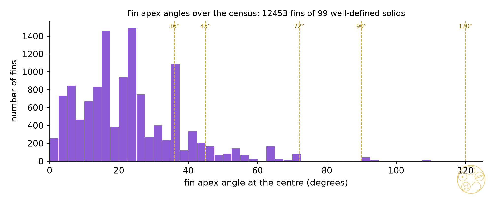
We give the sub-families names DICTO gave.
Mono-Strut Vacuus (all centre struts of one length; the corners lie on one sphere about O). Among DICTO's solids there are twelve: Blockhead, Cube Pearl, DICTO GTI, David, Delilah, Dodecaxes, Golden Clasp, Goliath, Icosaxes, TI Star core, Unborn Axes, White Knight. They can be built from one stock of rods for the struts. Nine DICTO solids build their whole frame, struts and edges, in at most three lengths: Cube Pearl, DICTO GTI, David, Delilah, Goliath, Icosaxes, TI Star core, Unborn Axes, White Knight. The cuboctahedron is the only solid of the census whose whole frame has a single length: its struts equal its edges, Fuller's vector equilibrium. For every other Platonic and Archimedean solid the frame has two lengths. When the solid's edges have that same length too, so that the whole frame of struts and edges is built from one rod, the Vacuus is a Mono-Length Vacuus; in the census this happens only for the cuboctahedron, Fuller's vector equilibrium.
Disc Vacuus (contains a central disc). Classical: the octahedron (3 square discs), cuboctahedron (4 hexagons), icosidodecahedron (6 decagons), deltoidal icositetrahedron (3 octagons), disdyakis dodecahedron (9 octagons), disdyakis triacontahedron (15 dodecagons), tetrakis hexahedron (6 hexagons) and triakis octahedron (3 squares), and Delilah. Among DICTO's new solids there are two. Kagemusha (D86, earlier Shadow-17; two of Johnson's J11 glued on their pentagons, #62 [5]) has one central disc: the regular pentagon in which the two halves meet, made of its five fins of exactly 72°, with struts of length √(1/2 + √5/10), the circumradius of a pentagon of side 1 (the Kagemusha Pentagon Disc). Lion (D87) has six central decagons, each made of ten fins of exactly 36° with both struts of the same length; its other 60 fins have apex 31.72° (the Lion Disc Vacuus). Its 120 fins are thus 60 in the discs and 60 outside them, the same arrangement of great decagons as in the icosidodecahedron.
Isofin Vacuus (all fins congruent). The census finds exactly 21: the 5 Platonic solids, the 13 Archimedean solids, the rhombic dodecahedron, the rhombic triacontahedron and Delilah, which is an octahedron. The Archimedean solids are isofin because all their edges and all their struts are equal; the two rhombic solids because each edge joins one strut of each of the two lengths. No new solid of DICTO's is isofin, and no other Catalan solid is.
Right-angled fins (Section 4) come in two kinds. Where the right angle is at a corner, as in the OG's 60, the DICTO Jewel's 24 and the DICTO TQHD's 60, the strut to that corner is perpendicular to the edge. Where it is at O, as in the octahedron, the triakis octahedron and David, the two struts are perpendicular.
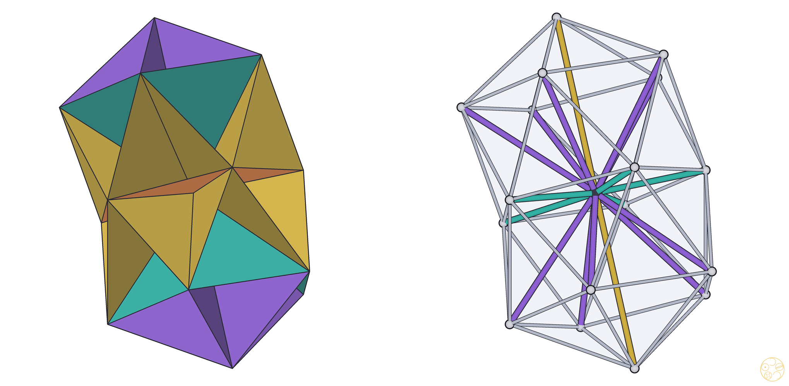
For a whole Disc Vacuus see the Lion (Plate 7), with its six decagon discs; for a Mono-Strut Vacuus, the Golden Clasp (Plate 10).
DICTO proposed making the Vacuus Solids as modular origami. One sheet cannot fold the whole Vacuus: three or more fins meet along every strut, and a crease joins only two. The open centre pyramid of one face does fold from one sheet. It has no base, and it is a fan of triangles O–vk–vk+1, one per side of the face, with the apex at O. Nested with their apices at O, the two pyramids at each edge meet back to back along its fin, so every fin is a double wall, and the Vacuus itself is the folded object.
Seven solids were netted for A4 at one true scale each: the cube (one net ×6, longest strut 96 mm), the cuboctahedron (2 nets), David (1 net ×4, fan angle 330°), Kagemusha (3 nets ×10), and the Mono-Strut solids Cube Pearl (2 nets), Golden Clasp (3 nets) and TI Star core (2 nets). Their fan angles run from 88.77° to 330°. The cube comes first: six copies of one net of four triangles with fins of apex 70.53° (cos = 1/3), fan angle 282.12°, every fold exactly 120° (cos ψ = −1/2), 7 pages. In Kagemusha the five pentagon-disc fins are double walls between a pyramid above the disc and one below it.
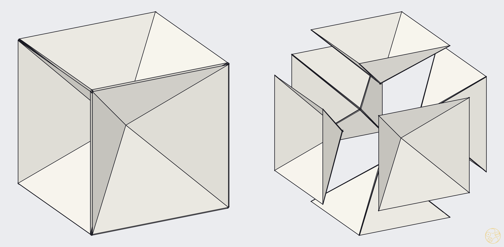
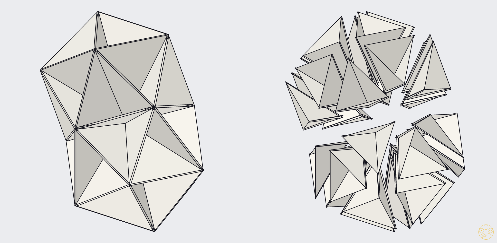
Limits. The paper is taken to have no thickness; a real double wall is two sheets thick, and since up to 32 apices meet at O here, the tips are best trimmed by about 2 mm. The nets PDFs are generated by the study (nets.py) and are not part of this paper.
Cardboard: the Vacuus as flat sheets. Before this paper, DICTO built the octahedron's Vacuus from corrugated board in four pieces slotted together without glue: two squares that cross by a half-lap along one axis, and a third square cut in two along a diagonal, each half sliding onto the second square by a half-lap and resting on the first. Every edge of the octahedron lies in one of the three coordinate planes, so the four fins in each plane close into one square, and the three squares are the whole Vacuus: a Disc Vacuus. A Vacuus can be slotted together from flat board exactly when its fins close into whole discs through O, that is, when the solid's edges run along great polygons round its centre. Of the Platonic and Archimedean solids and their duals checked, this holds for the octahedron (three squares), the cuboctahedron (four hexagons) and the icosidodecahedron (six decagons); for the cube, the rhombic dodecahedron, the icosahedron and the dodecahedron the fins of opposite edges share a plane but meet only at O, so those need joined pieces. We drew DICTO's four pieces to measure: a cut sheet at 1:1 and the assembly steps are in the data (vacuus-cardboard-octahedron.pdf); the cuboctahedron and icosidodecahedron follow the same method, with split pieces wherever three or more discs meet in one line.
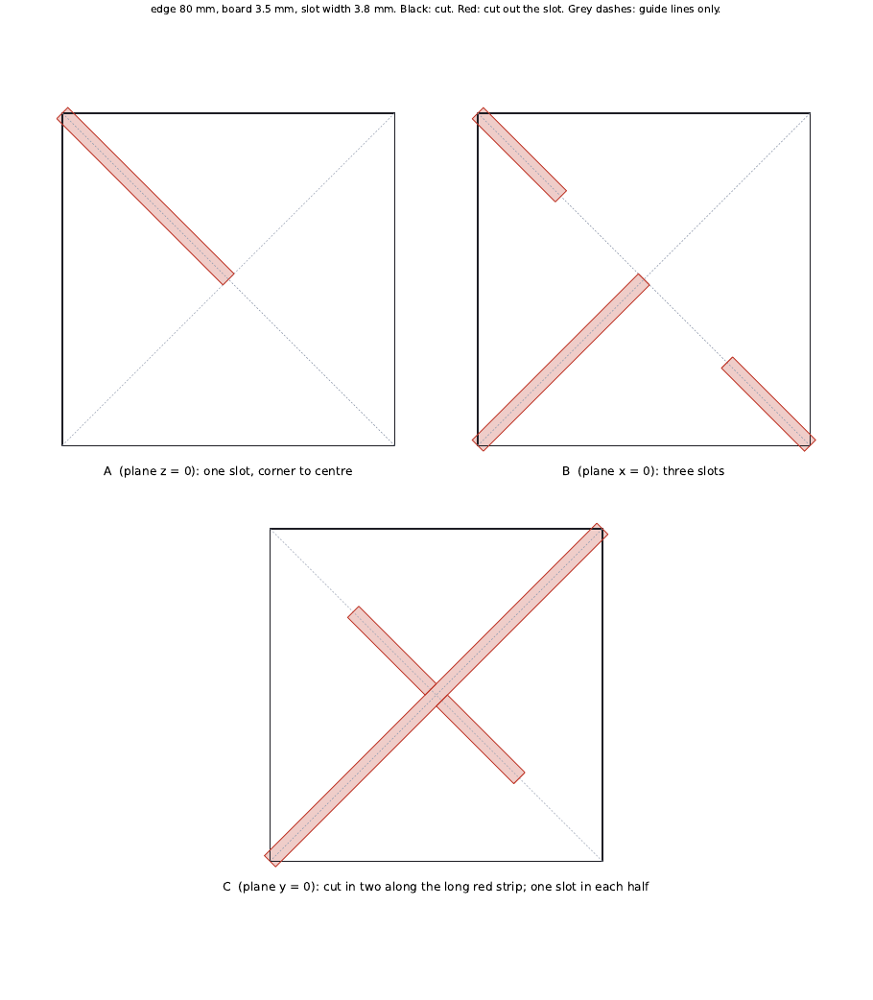
In metal. The same four pieces can be cut from aluminium, stainless or corten plate and slid together as in cardboard, with no welds or bolts. Standing on three corners (one face of the octahedron down), every piece can leave only along the line it slid in on, and for each piece that way runs into the floor or uphill, so its own weight holds the whole together. To lock it against knocks without fixings, each half of C carries two short tabs that drop through matching slots in A as it slides onto B (Figure 8); a step cut into a half-lap slot would not work, because two plates crossing along a line can only slide along that line. With squares of 0.9 m edge the piece is 1.27 m across and the plates fit a small car flat. Figure 9 shows the three slot-together Vacuus solids at that size.
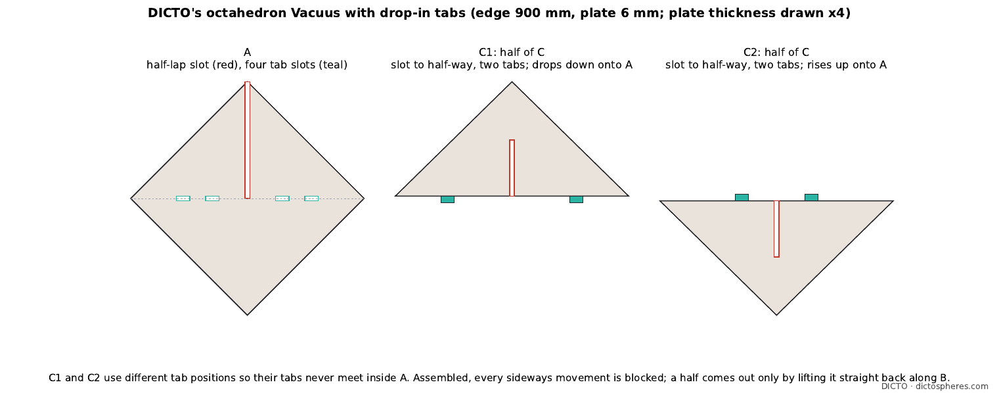
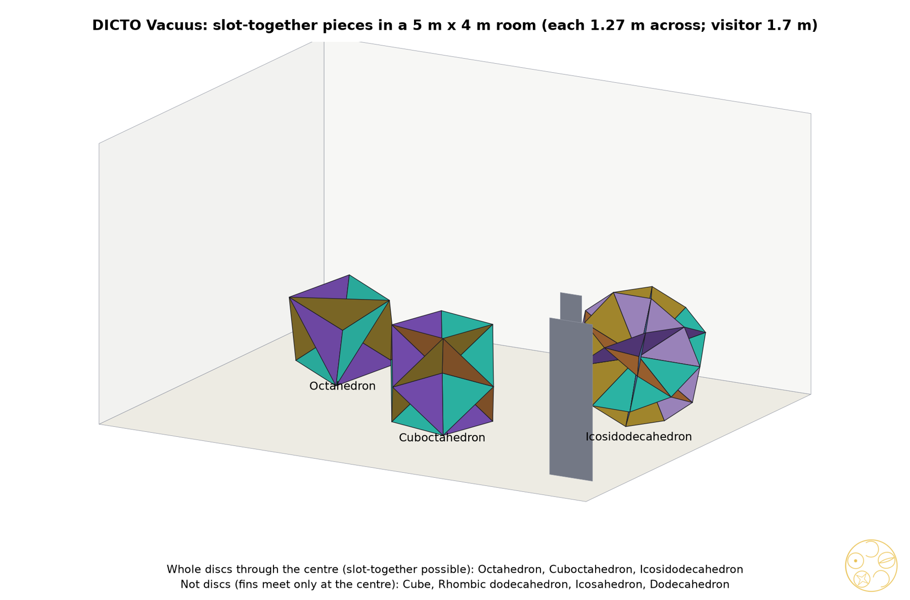
Sources checked (2 November 2026). Census, reference library (top five hits and page hits per query), six queries: "Leonardo da Vinci vacuus open solids Pacioli De divina proportione"; "central dissection of a polyhedron into pyramids from the centre over the faces"; "cone over the edge skeleton of a polytope, triangles from centre to edges"; "face fan of a polytope, polyhedral fan, normal fan"; "excavated polyhedra Wenninger"; "planes through the centre and each edge of a polyhedron, central projection onto the sphere, spherical tiling". Hits: Pacioli 1509 (pp. 9, 40, 76); Kepler 1619 (pp. 51, 55, 64, 271); Apple Peel Unfolding of Archimedean and Catalan Solids; An Etruscan Dodecahedron; Ordine privo di periodicità; Hexagons and the golden ratio; Polar Zonohedra Edge-Unfold to Nets; On Folding a Polygon to a Polyhedron; Hynd 2023 (Reuleaux polyhedron); An almost trivial observation about the icosahedron; Extremal properties for dissections of convex 3-polytopes; Goldberg 1937; Grünbaum 2010 (Bilinski dodecahedron); Internal and external duality in abstract polytopes; The canonical form, scissors congruence and adjoint degrees of polytopes; On Delaunay's classification theorem; A new method for generalizing non-self-intersecting flexible polyhedra; Bianchi–Doná–Speziale 2011; Erdahl–Rybnikov 2001; Betke–Henk 2000; Integral Planes and Unit-Norm Polytopes; The orthogonal connectedness of polyhedral surfaces; Perfect and almost perfect homogeneous polytopes; Alexeev 2002; Garber–Gavrilyuk–Magazinov 2012; Wenninger, Polyhedron Models; Johnson 1966; Wikipedia "Goldberg polyhedron" and "Tetrahedral-octahedral honeycomb"; Two-orbit convex polytopes and tilings; Platonic solids, Archimedean solids and semi-equivelar maps on the sphere; Random hyperbolic polyhedra in horoballs; Tropical balls, geodesics and honeycomb; Characterization and Construction of a Family of Highly Symmetric Spherical Polyhedra; Cutler–Schulte 2011; Bezdek et al. 2007 (ball-polyhedra); Koca et al. 2020; Fedorov 1885, ch. 13. None describes the centre-to-edge fins as a solid. Census, web, four searches: Leonardo's vacuus solids (Wikipedia "Divina proportione"; Leonardo-online, MPIWG; Matemáticas Visuales, Leonardo's octahedron, dodecahedron and septuaginta pages; CityU Hong Kong "da Vinci session 1"; Nexus Network Journal, Monza models; Redalyc 607973000008); triangles from the centre to each edge (arXiv:1909.02874, 2303.09702, 2307.06017, 2209.08919; US patents 8,599,195, 11,697,058 and 4,608,653; the Bentley MicroStation polyhedron tool; a Domerama geodesic glossary); face fan and pyramidal decomposition (arXiv:2511.04322; Macaulay2 Polyhedra/faceFan; OSCAR polyhedral fans); Wenninger and excavated polyhedra (Wikipedia "Excavated dodecahedron", "List of Wenninger polyhedron models", "Magnus Wenninger"; EPFL graphsearch; Science Museum Group polyhedra-model drawings; Imaginary "Polyhedron Models"). Origami, reference library, eight queries: "modular origami units polyhedra Tomoko Fuse Sonobe unit"; "paper models of polyhedra nets glue tabs Wenninger"; "pyramid units star units origami polyhedral cones"; "computational origami Mitani design of folded paper"; "Lang TreeMaker origami design circle packing"; "excavated polyhedra non-convex solids paper model construction"; "dissection of a polyhedron into pyramids from the centre over the faces model"; "developable cone folded from a flat sector fan of triangles". Hits: Riskin 2007 (Sonobé modules); Hartl and Kwickert 2012 (Cubus simus, Dodecaedron simum by paper folding); Wenninger 1971; O'Rourke 2010; Benbernou, Demaine, Demaine and Ovadya 2009; Gu and Chen 2020; Nawratil 2021; Royo Prieto and Tramuns 2014; Weber and Wu 2018; Kabai 2010; page hits Pacioli 1509 (pp. 9, 46, 101, 107, 115, 116, 132), Kepler 1619 (pp. 87, 271), Dürer 1525 (pp. 12, 17, 57, 62, 125, 142), Goldberg 1937 (p. 1), Grünbaum 2010 (pp. 19–26), Akpanya et al. 2024. The library holds no Fuse, Mitani or Lang text; those were checked on the web. Origami, web, eight searches: modular origami pyramid units and Fuse's Unit Origami (Wikipedia "Modular origami"; Tuttle, The Complete Book of Origami Polyhedra; Gilad's origami database); paper polyhedra dissected into centre pyramids (H. Walser, "Cube pyramids" 2020 and "Star"; Smithsonian Wheeler models; Wolfram Demonstrations "Dissection of three polyhedra into two"); Mitani's ORI-REVO (mitani.cs.tsukuba.ac.jp); Wenninger models and excavated polyhedra (Wikipedia; software3d.com Stella models); open pyramids glued back to back at the centre (Walser; Mitchell, Abstract Fox; Bridges 2023 p. 601; Tamatebako); Lang's TreeMaker (MIT 6.849 lectures 4–5; Origami Design Secrets); Sonobe units and pyramids on faces (Wikipedia "Sonobe"; arXiv:0706.2433; Make "Math Monday"; Bridges 2011 paper 92); hollow polyhedron models from open pyramids with apex at the centre (G. Hart, NNJ fig. 10; Constantino and de Souza 1998; US 1,292,188; US 2002/0172928). "New" means new only within these checks.
The operation. DICTO proposed pyramidise as one operation on any solid whose centre O lies strictly inside every face plane (Proposition 1). It splits the solid into its centre pyramids, one over each face with apex O. The pyramids can then be exploded outward along their face normals, so that each one stands apart, and each can be turned out over its own base so that its apex points away from the centre, which gives the Star. Before anything moves, neighbouring pyramids share walls: the wall shared across each edge is that edge's fin, and the walls together are the Vacuus. Pyramids, exploded pyramids, Star and Vacuus are four views of one splitting; the Star and the Vacuus are mirror images of each other (Proposition 2).
The Star step. DICTO proposed the Star as the step that turns each centre pyramid out over its own face. The turned-out pyramid over a face F has its apex at OF, the mirror image of O in the plane of F, and its walls are the mirror images in that plane of the fins on the edges of F.
Proposition 2 (the Star law). Let P satisfy Proposition 1 and let Star(P) be P together with its turned-out centre pyramids. (a) The volume of Star(P) is exactly twice that of P. (b) At an edge of P with dihedral angle δ, the dihedral angle of Star(P) is 2δ. (c) The surface of Star(P) is the Vacuus of P reflected, fin by fin, in the face planes.
Proof. (a) The centre pyramids tile P, and reflection preserves volume, so the turned-out pyramids add a second copy of V(P). (c) Reflection in the plane of F carries the centre pyramid over F to the turned-out one and each fin on an edge of F to the wall over that edge. (b) The fin at an edge e splits δ into the two angles it makes with the faces F and G; reflection carries each angle to the far side of its face, so the material angle at e becomes the two reflected angles plus δ, that is 2δ. ∎
The edge e therefore lies flat in Star(P) exactly when δ = 90°, and becomes a reflex (inward) edge when δ > 90°. For the cube, every δ is 90°: the six turned-out pyramids close into the rhombic dodecahedron, of twice the cube's volume. Of the other Platonic solids, in DICTO order, the dodecahedron (233.13°) and icosahedron (276.38°) fold inward at every old edge, the tetrahedron keeps convex edges (2δ = 141.06°), and the octahedron (218.94°) folds inward. Part (b) was checked numerically on the tetrahedron (agreement to 10−13).
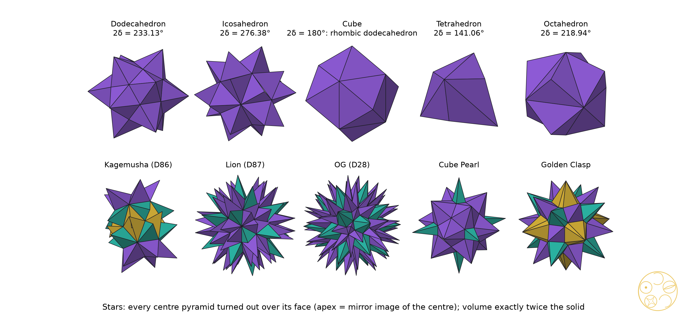
Aristotle. In On the Heavens Aristotle wrote that among solids only the pyramid and the cube fill space. DICTO proposed that the pyramid could be a face pyramid, and in paper #44 [1] we proved Aristotle's Pyramid Theorem: of the five face pyramids of the Platonic solids, only the cube's alone and the tetrahedron's with the octahedron's fill space; the icosahedron's, the Cleo-Icos, needs a partner that is not a face pyramid. There the centre pyramids are studied as pieces that fill space. Here the same pieces are studied for the walls between them; the two papers are companions.
DICTO's route. The line of work began with a build. DICTO made a cube from his PET-bottle system B1NR and saw that it is six pyramids meeting at the centre (Section 1). From there he turned to the face pyramids as space-fillers in #44 [1], and to the Star, in which the pyramids are turned out. The Vacuus takes the last step: it keeps only the walls the pyramids share, built as SHEETS or STRUTS (Section 2) and folded in paper (Section 6).
Every solid with its centre inside all its face planes holds a DICTO Vacuus: the walls between its centre pyramids, one fin per edge, built as sheets or as struts. A solid and its polar hold supplementary Vacuus: the fin apex angles of one are π minus the dihedral angles of the other, its wedges π minus the other's face angles, and the fins of dual edges cross at right angles. Of 100 solids only Lotus Hexa has no Vacuus. The Platonic and Archimedean solids, the two rhombic solids and Delilah are the Isofin Vacuus; twelve of DICTO's solids are Mono-Strut Vacuus, buildable with one length of strut from the centre; Kagemusha and Lion are Disc Vacuus, with a central regular pentagon and six central decagons. In paper, each pyramid folds open from one fan, and nested at the centre they make every fin a double wall; the cube is the first to fold. Whether other centres than the corner centroid give useful Vacuus for the solids of low symmetry is left open.
Data and code. Study 2026-11-02-dicto-vacuus: scripts/qf.py (exact arithmetic in Q(√d), exact rational-π test), classical.py (the 31 classical solids), vacuus.py (per solid: Proposition 1, fins, wedges with their sums, sheets and discs, struts), collect.py (vacuus-census.json, collect.log, the polar check), render.py (the plates: z-buffer renderer, solid faces, edges at least 2 px at 300 dpi). Study 2026-11-02-vacuus-origami: fan.py (fans, exact fold angles, net types, closure check), nets.py (A4 nets with the two-half-tab rule, overlap check), render.py (Figures 5 and 6). DICTO Solids v7 [4]. This paper: papers/dicto-vacuus/build.py.
[1] DICTO, "Aristotle's Pyramid", paper #44, DICTO DOI: 10.5281/zenodo.23529498 (2026).
[2] G. M. Ziegler, Lectures on Polytopes, Graduate Texts in Mathematics 152, Springer (1995), Lecture 7 (fans, face fan and normal fan).
[3] I. Todhunter and J. G. Leathem, Spherical Trigonometry, Macmillan (1901), polar triangles; the same proof applies to convex spherical polygons.
[4] DICTO, "DICTO Solids: exact geometry", dataset, version 7, DICTO DOI: 10.5281/zenodo.23850845 (concept 10.5281/zenodo.23606967) (2026).
[5] DICTO, "Shadows of the Fourth Dimension", paper #62, DICTO DOI: 10.5281/zenodo.23687223 (2026).
[6] L. Pacioli, De divina proportione, Venice (1509), with drawings by Leonardo da Vinci.
[7] G. W. Hart, "In the Palm of Leonardo's Hand: Modeling Polyhedra", Nexus Network Journal 4(2) (Spring 2002), georgehart.com/nexus/Didactics-Hart.html.
[8] M. J. Wenninger, Polyhedron Models, Cambridge University Press (1971).
[9] H. Walser, "Cube pyramids", Miniaturen (web page, 4 November 2020), walser-h-m.ch/hans/Miniaturen/C/Cube_pyramids/Cube_pyramids.htm.
[10] M. G. Constantino and A. X. de Souza, "Modelos para o carbono sp³: quatro pirâmides no tetraedro", Química Nova 21(5) (1998) 662–665, doi:10.1590/S0100-40421998000500022.
[11] T. Fuse, Unit Origami: Multidimensional Transformations, Japan Publications (1990).
[12] DICTO, "David and Goliath: Jessen's Icosahedron and the Tetrahedron in the A15 Weight Walk", paper #55, DICTO DOI: 10.5281/zenodo.23632359 (2026).
[13] DICTO, Star Cores (Cycles of Growth, Part II), DICTO DOI: 10.5281/zenodo.23867733 (2026).
Each plate shows the Vacuus of one solid twice, inside a translucent ghost of the solid. Left, SHEETS: the fins, coloured by shape; each face shows as a hollow pyramid opening towards the centre. Right, STRUTS: rods from O (dark ball) to every corner, coloured by length, with the solid's edges as thin grey rods. Orthographic views, elevation 20°, azimuth 24°; z-buffer renderer with solid faces and edges of at least 2 px at 300 dpi. Plates 1–5 are the Platonic solids, Plates 6–11 DICTO's solids.
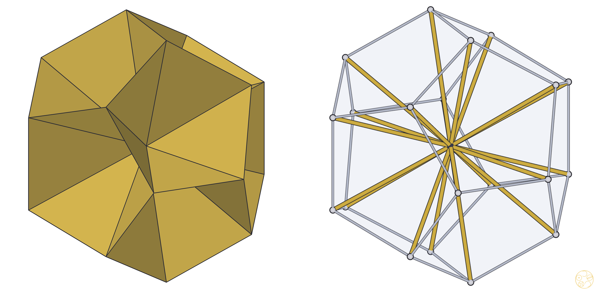

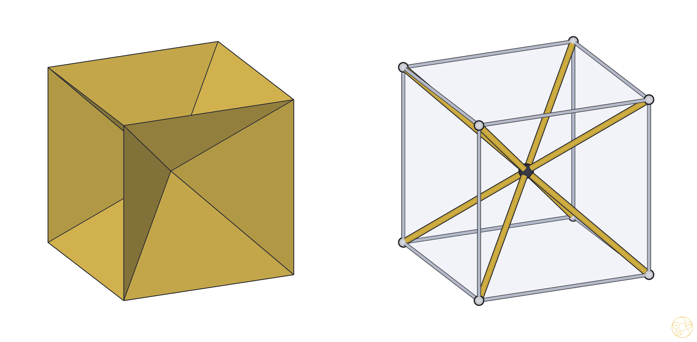
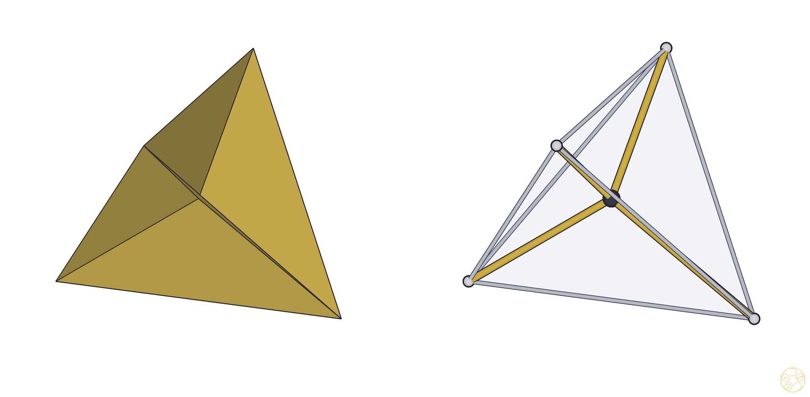

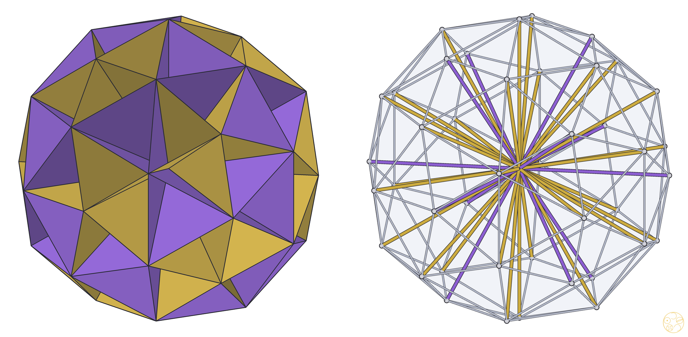
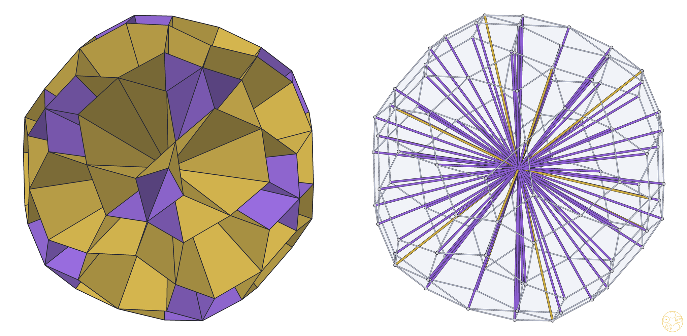
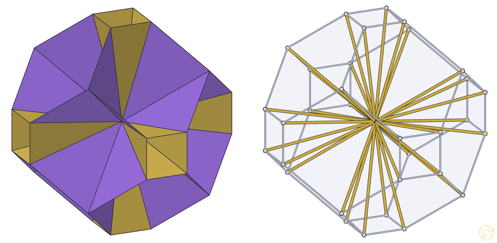
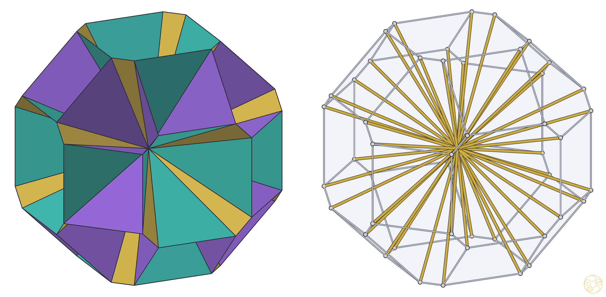
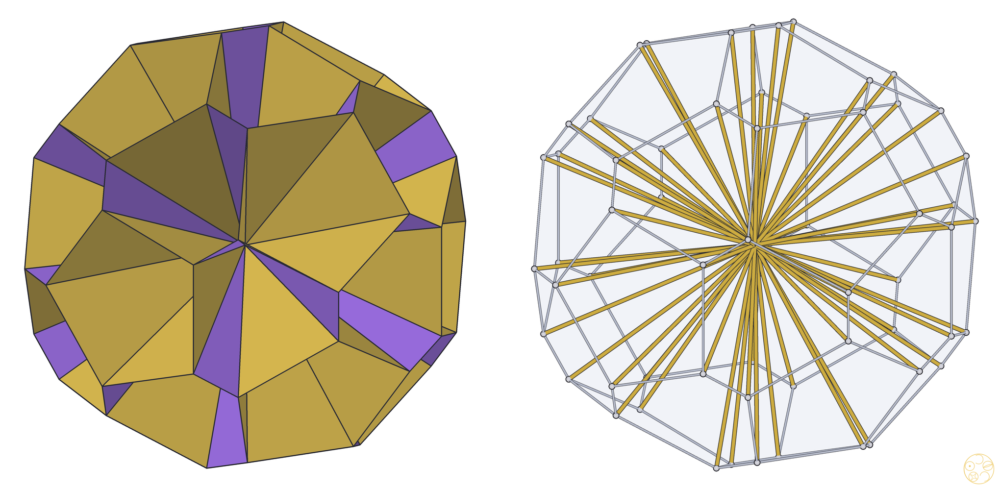